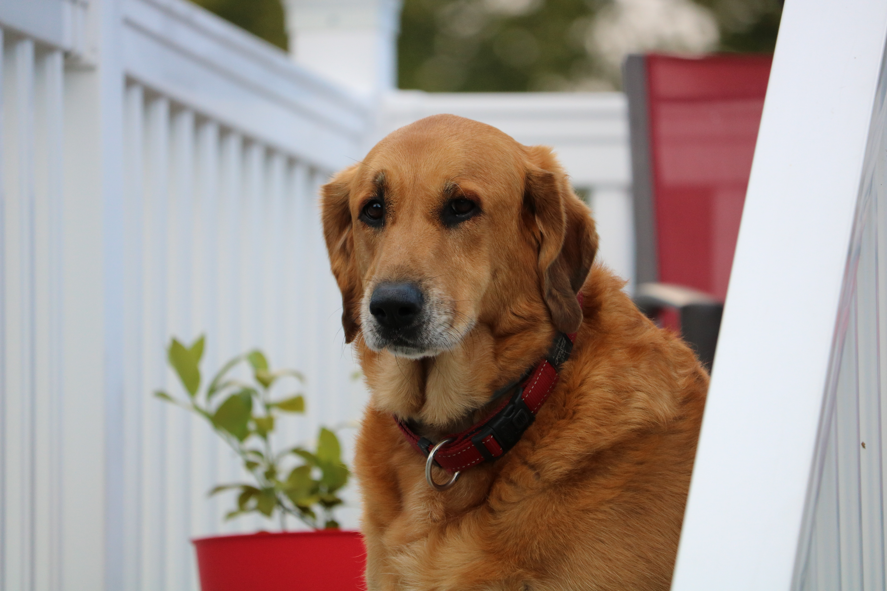
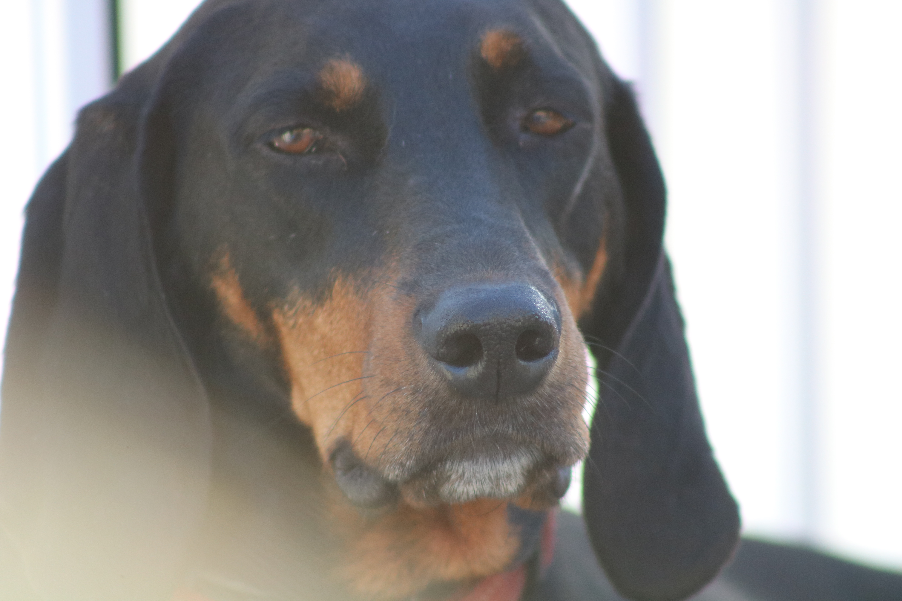

Daisy was are first rescue dog.
My wife and I addopted her in 2009 from American Black and Tan coonhound rescue when she was 8 weeks old.

Ariel was are 2nd rescue dog. She is half Black And Tan and half golden retriver.
My wife and I addopted her in 2010 from American Black and Tan coonhound rescue when she was 8 weeks old..
Penelop was are first foster rescue dog.
My wife and I fostered her in 2011 for American Black and Tan coonhound rescue. After a week we said lets adopt her.
Penelope and her sister and brother were abanded as puppies so we are not sure how old she was when we got her.
When we took her to our vet to be checked out the vet thought she was about 6 months.
 Click here for Homepage!